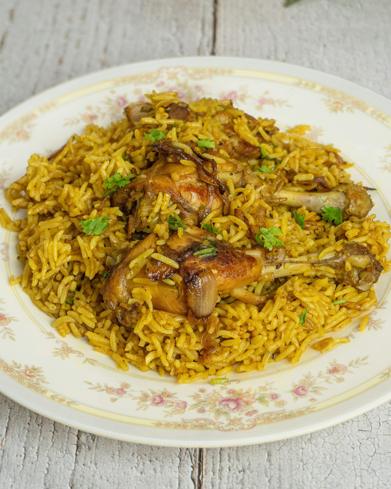

Home
One-Pot Paprika Chicken with Olives and Orzo

Photo by Subhrajyoti Paul: https://www.pexels.com/photo/delicious-chicken-biryani-on-floral-plate-36885731/
Description
I came across this recipe in "The Weeknight Mediterranean Kitchen" by Samantha Ferraro.
It is quick and easy to throw together and bake. The paprika, lemon, olive, and orzo work
quite well together! The orzo mops up all the juices from the chicken and a bit from the lemon
with the end result being a fluffy and great tasting orzo.
Ingredients (2 to 4 servings)
- 2 lb (907 g) chicken thighs, bone-in, skin-on
- 2 tsp (5 g) smoked paprika
- 1/2 tsp salt
- Olive oil, as needed
- 1 shallot, chopped finely
- 2 garlic cloves, chopped finely
- 8 0z (226 g) dried orzo
- 2 cups (475 ml) chicken stock
- 1 lemon, sliced
- 1 cup (150 g) whole pitted Kalamata olives
- Chopped parsley, for garnish
Steps
- Preheat oven to 350F (176C)
- Toss the chicken with the paprika and salt in a bowl.
Make sure you get an even coat on the chicken.
- Heat a large skillet over medium-high heat and add enough oil to coat the bottom.
Don't overdo the oil, the chicken will give off its own fat as well.
- Once the skillet is hot, place the chicken thighs (skin-side down) in the skillet
and cook for 3 to 4 minutes or until a deep golden brown.
- Flip chicken and cook for an additional 3 minutes or until deep golden brown.
- Remove and plate chicken, set aside.
- Add the shallot into the same hot skillet and sauté until lightly
golden. 2 to 3 minutes.
- Add the garlic and saute for 1 minute.
- Add the orzo and stir to coat it in the oil.
Even out the orzo with a spatula.
Add the chicken back into the pan, skin-side up and pour in the stock.
- Scatter the lemon slices and olives over the pot and cover the pot.
Place in the oven. After 25 minutes remove the cover and cook for an additional 12 to 15 minutes or until a
meat thermometer reads
190 - 195F (88 - 91C).
- Remove from oven and garnish with parsley.